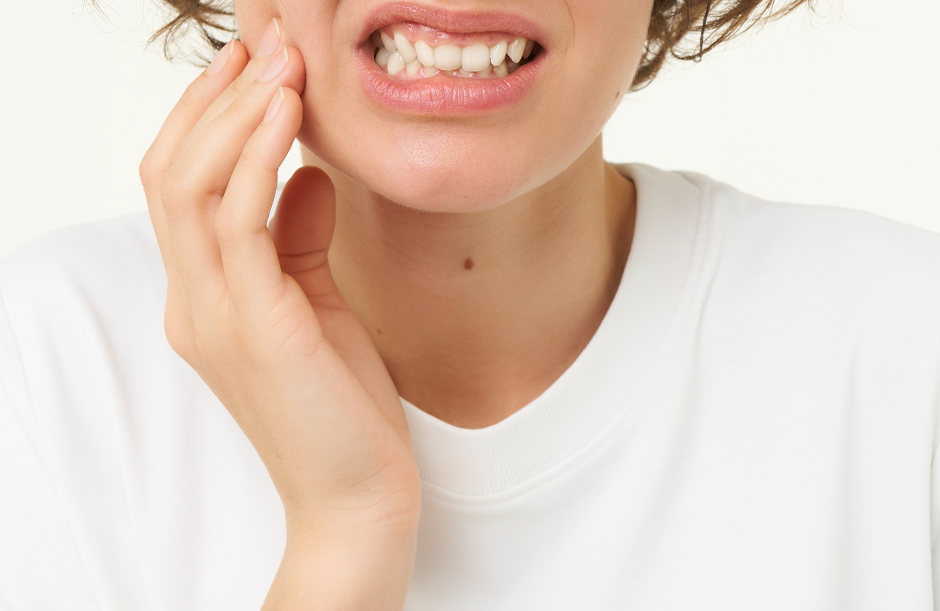

<!-- publication -->
<section id="blog">
    <div class="container mil-p-120-90">
        <div class="row justify-content-center">
            <div class="col-lg-12">
  
                <div class="mil-image-frame mil-horizontal mil-up">
                    
                </div>
                <div class="mil-info mil-up mil-mb-90">
                    <div>Date: &nbsp;<span class="mil-dark">Avril 2025</span></div>
                </div>
  
            </div>
            <div class="col-lg-8">
  
                <p class="mil-text-xl mil-dark mil-up mil-mb-60">  Et si la clé de votre santé bucco-dentaire ne résidait pas seulement dans les traitements chez le dentiste, mais dans votre quotidien ? La prévention dentaire est l'élément essentiel pour éviter les caries, les maladies des gencives et même la perte de dents. Mais vous êtes-vous déjà demandé si vos habitudes quotidiennes suffisaient réellement à protéger votre sourire ?


                </p>
  
                <blockquote class="mil-up mil-mb-60">
                    Les habitudes quotidiennes :
                    </blockquote>
  
                <!-- <h5 class="mil-up mil-mb-30">Understand the Field</h5> -->
                <p class="mil-up mil-mb-60">Brossage des dents : Vous vous brossez les dents tous les jours, mais êtes-vous sûr que vous le faites correctement ? Un mauvais brossage peut laisser des résidus de plaque dentaire, et donc des bactéries, qui peuvent entraîner des caries.


                    Fil dentaire : Le fil dentaire est-il réellement nécessaire ? Beaucoup de gens l'ignorent, mais il est essentiel pour nettoyer les espaces entre les dents et prévenir les maladies des gencives.
                    
                    
                    Bain de bouche : Vous utilisez peut-être du bain de bouche antibactérien, mais est-ce vraiment utile ou bien vous faites-vous simplement une illusion de propreté ?</p>
  
                <h5 class="mil-up mil-mb-30">Les questions choquantes :</h5>
                <p class="mil-up mil-mb-60">"Savez-vous que votre brossage pourrait aggraver votre santé dentaire ?"
                    La manière dont vous vous brossez les dents est cruciale. Un brossage trop agressif ou un mauvais choix de brosse peuvent endommager vos gencives. N'avez-vous jamais pensé que vous pouviez faire plus de mal que de bien en suivant une mauvaise routine ?
                   </p>
  
                <h5 class="mil-up mil-mb-30">Les visites régulières chez le dentiste :
                </h5>
                <p class="mil-up mil-mb-60">La prévention passe aussi par des contrôles réguliers. Même si vous avez une routine irréprochable, il est essentiel de consulter votre dentiste pour des nettoyages professionnels et des vérifications.
                <h5 class="mil-up mil-mb-30">Les aliments à éviter pour une bonne santé dentaire :
                </h5>
                <p class="mil-up mil-mb-60">Les aliments sucrés : L'excès de sucre est l'un des principaux responsables des caries dentaires. Réduisez votre consommation de sucreries pour garder vos dents en bonne santé.


                    Les boissons acides : Les boissons comme les sodas ou les jus de fruits acides peuvent endommager l'émail de vos dents.
                    </p>
  
                
  
                <!-- <p class="mil-up mil-mb-60">Remember that creativity is at the core of graphic design. Embrace your creativity, experiment with different ideas, and think outside the box to create unique and impactful designs. Don't be afraid to take risks and push the boundaries of traditional design. Steve Jobs once said:</p> -->
  
                <blockquote class="mil-up mil-mb-60">
                  <h5 class="mil-up mil-mb-30">Conclusion</h5>
                  La prévention dentaire commence par vous, mais elle ne s'arrête pas là. Vous devez également consulter régulièrement un professionnel pour éviter des problèmes futurs. Une bonne hygiène et des visites régulières peuvent vraiment transformer votre santé bucco-dentaire à long terme.
                </blockquote>
            </div>
        </div>
    </div>
  </section>
  <!-- publication end -->